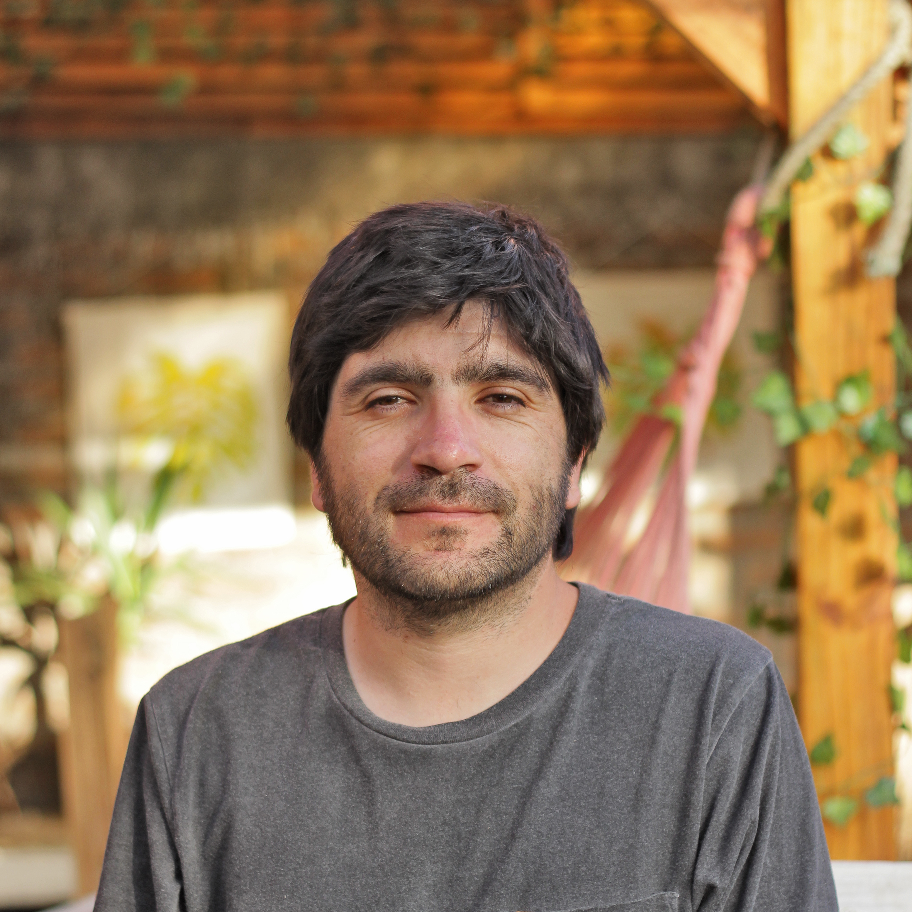

Perfil y trayectoria
Sobre mí

Soy editor independiente y librero especializado en literatura, dedicado al acompañamiento de manuscritos y a la producción de libros de poesía, ensayo y narrativa [en Chile / entre Tomé y Santiago].
Mi trabajo parte de la lectura detenida del borrador: colaborar con autores, editoriales independientes e instituciones en las decisiones estructurales, estilísticas y materiales que transforman un original en un libro legible y bien resuelto. Desde la evaluación inicial y la edición de mesa hasta la corrección de pruebas y el seguimiento en imprenta, concibo la edición como un oficio artesanal que exige criterio literario y rigor técnico.
En paralelo, mi desempeño como librero me mantiene en contacto directo con los lectores, los catálogos independientes y las dinámicas reales de circulación del libro. Esa doble perspectiva —la de quien prepara el texto en la mesa de trabajo y la de quien lo pone en manos de un lector— orienta cada proyecto que acompaño.
Asimismo, desarrollo labores de investigación literaria y rescate documental en torno a la poesía chilena en Transa, un espacio de archivo y crítica alojado en Hypotheses que dialoga con la memoria gráfica y cultural de Tomé.